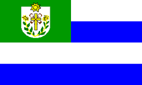
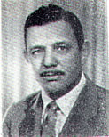
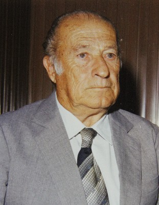
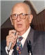
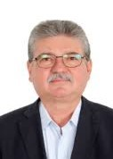
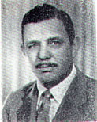
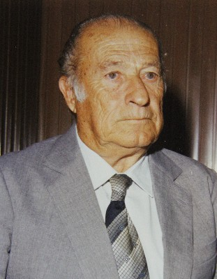
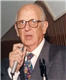
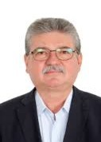

Origem e Fundação

Mirassol, localizada no noroeste do estado de São Paulo, tem suas raízes fincadas no início do século XX, quando a região era dominada por densas matas conhecidas como Mata-Una. Naquela época, os fazendeiros viviam em isolamento, separados por grandes extensões de floresta e sem acesso a serviços básicos ou convivência social. Diante dessa realidade, um grupo de proprietários rurais decidiu se unir para fundar um povoado que rompesse esse isolamento e permitisse o desenvolvimento da região.
A liderança desse movimento coube a Joaquim da Costa Penha, conhecido como Capitão Neves, que incentivou a abertura de clareiras na mata e a construção das primeiras moradias. Assim, em 8 de setembro de 1910, nasceu o povoado de São Pedro da Mata-Una, que mais tarde seria rebatizado como Mirassol. Com o crescimento populacional e o fortalecimento da economia local, o povoado foi elevado à categoria de distrito em 1919, vinculado ao município de Rio Preto. Poucos anos depois, em 23 de dezembro de 1924, Mirassol conquistou sua emancipação política e se tornou oficialmente um município independente.
Desde então, Mirassol passou por diversas transformações, impulsionadas por líderes que marcaram sua história com obras, investimentos e visão de futuro. Entre os prefeitos mais lembrados, destacam-se cinco nomes que contribuíram significativamente para o progresso da cidade:
 José Maria de Campos Maia é considerado um dos prefeitos mais importantes da história de Mirassol. Durante seus mandatos, investiu fortemente na educação, construindo escolas e promovendo o acesso ao ensino. Além disso, realizou obras de infraestrutura que modernizaram a cidade, preparando-a para o crescimento urbano e econômico. Seu legado é lembrado com respeito e admiração até hoje.
Leopoldo Gotardi teve papel fundamental na expansão urbana e na melhoria da infraestrutura básica. Seu governo foi marcado por obras que prepararam Mirassol para crescer de forma ordenada, contribuindo para a urbanização e para a melhoria da qualidade de vida dos moradores.
Elias Thomé governou em dois períodos distintos, demonstrando a confiança da população em sua liderança. Realizou obras importantes como pontes e a implantação de redes de água e esgoto, fundamentais para a saúde pública e o desenvolvimento urbano. Sua atuação foi decisiva para a estruturação da cidade.
Fernando Antonio Vendramini incentivou o crescimento da cidade com a criação de novos bairros e investimentos em saúde, educação e transporte. Seu mandato foi marcado por uma visão de progresso e inclusão, promovendo melhorias significativas na qualidade de vida da população.
Edson Antonio Ermenegildo é o atual prefeito de Mirassol, com vários mandatos consecutivos. Tem se destacado por sua atuação voltada à tecnologia, saúde e educação, além de trabalhar para atrair empresas e fomentar o desenvolvimento econômico da cidade. Também é conhecido por seu envolvimento com o esporte, sendo presidente do Mirassol Futebol Clube.
Hoje, Mirassol é uma cidade vibrante, com mais de 65 mil habitantes, localizada a cerca de 450 km da capital paulista. Sua história é marcada pela coragem de seus fundadores e pela dedicação de líderes que ajudaram a transformá-la em um polo regional de desenvolvimento, com infraestrutura moderna, serviços públicos eficientes e uma população orgulhosa de suas raízes.
José Maria de Campos Maia é considerado um dos prefeitos mais importantes da história de Mirassol. Durante seus mandatos, investiu fortemente na educação, construindo escolas e promovendo o acesso ao ensino. Além disso, realizou obras de infraestrutura que modernizaram a cidade, preparando-a para o crescimento urbano e econômico. Seu legado é lembrado com respeito e admiração até hoje.
Leopoldo Gotardi teve papel fundamental na expansão urbana e na melhoria da infraestrutura básica. Seu governo foi marcado por obras que prepararam Mirassol para crescer de forma ordenada, contribuindo para a urbanização e para a melhoria da qualidade de vida dos moradores.
Elias Thomé governou em dois períodos distintos, demonstrando a confiança da população em sua liderança. Realizou obras importantes como pontes e a implantação de redes de água e esgoto, fundamentais para a saúde pública e o desenvolvimento urbano. Sua atuação foi decisiva para a estruturação da cidade.
Fernando Antonio Vendramini incentivou o crescimento da cidade com a criação de novos bairros e investimentos em saúde, educação e transporte. Seu mandato foi marcado por uma visão de progresso e inclusão, promovendo melhorias significativas na qualidade de vida da população.
Edson Antonio Ermenegildo é o atual prefeito de Mirassol, com vários mandatos consecutivos. Tem se destacado por sua atuação voltada à tecnologia, saúde e educação, além de trabalhar para atrair empresas e fomentar o desenvolvimento econômico da cidade. Também é conhecido por seu envolvimento com o esporte, sendo presidente do Mirassol Futebol Clube.
Hoje, Mirassol é uma cidade vibrante, com mais de 65 mil habitantes, localizada a cerca de 450 km da capital paulista. Sua história é marcada pela coragem de seus fundadores e pela dedicação de líderes que ajudaram a transformá-la em um polo regional de desenvolvimento, com infraestrutura moderna, serviços públicos eficientes e uma população orgulhosa de suas raízes.